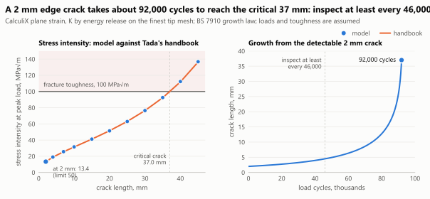

The Question
A steel plate, S355, 100 mm wide and 10 mm thick, carries cyclic tension: 150 MPa at the peak of each cycle, 15 MPa at the bottom. Inspection can find an edge crack once it's 2 mm deep. How long does a crack that size take to grow to failure, and how often must the plate be inspected? Two requirements: at the detectable crack, the stress intensity stays below half the fracture toughness; and the growth life is at least twice the planned inspection interval of 40,000 cycles. The loads, the toughness (100 MPa√m) and the detectable size are assumed values; the crack growth law is the published BS 7910 one for steels in air.
The Answer
Yes: inspect at least every 46,000 cycles, so the planned 40,000 has margin. A 2 mm crack grows to the critical size, 37.0 mm, in about 92,000 cycles. The toughness sets the critical size; the remaining ligament wouldn't yield until 57.7 mm. At the detectable crack the stress intensity is 13.4 MPa√m, about a quarter of the toughness.
Most of the life is spent while the crack is small. 81 % of the cycles go into growing from 2 to 10 mm. That slow early growth is what gives inspection its chance, and it's why the size inspection can find matters so much.
The Model
- Part
- S355 plate, 100 mm wide and 10 mm thick, with a straight edge crack through the thickness; half the plate is modelled, because the crack plane is a plane of symmetry.
- Mesh
- Quadratic triangles in plane strain, from Gmsh, shrinking to 0.1, 0.05 and 0.025 mm at the crack tip for the mesh study.
- Crack lengths
- Eleven, from 2 to 45 mm.
- Growth
- BS 7910's simplified law for steels in air: da/dN = 5.21 × 10⁻¹³ ΔK³ (mm per cycle, ΔK in N/mm^1.5), integrated from 2 mm to the critical crack.
The case file: recorded assumptions, limits and inputs
This is the study's own record, written before the run and saved with it, in the shorthand of the case file.
cases/edge_crack_mesh_r2.toml ↗
Edge-cracked S355 plate (100 mm wide, 10 mm thick) in cyclic tension, 150 MPa maximum, R = 0.1: K(a) by FE at 11 crack lengths 2-45 mm (energy release rate and crack opening, CalculiX plane strain on a Gmsh half model refined at the tip), critical crack against Kmat 100 MPa sqrt m and net-section yield, BS 7910 crack growth life from 2 mm; tip element sizes 0.1 / 0.05 / 0.025 mm.
Assumptions, and How Each Is Checked
- Linear elastic fracture mechanics, plane strain (K from G with E / (1 - nu^2)); the plastic zone at Kmax 13-100 MPa sqrt m in S355 (r_p = (K / sigma_y)^2 / 6 pi up to 4 mm at the critical crack) is small against the ligament until the last few millimetres. [model form]
- Uniform remote tension with the plate's ends free to rotate (Tada's case); the half model's height (200 mm, 2 W) makes the end conditions irrelevant at the crack.
- Crack growth by the BS 7910 / IIW simplified law for steels in air (R < 0.5): da/dN = 5.21e-13 dK^3 mm/cycle, dK in N/mm^1.5, threshold 63 N/mm^1.5. [published design law]
- Fracture toughness Kmat 100 MPa sqrt m [synthetic: a client would give CTOD or Charpy results]; net-section yield at 355 MPa (S355) [standard].
- Constant-amplitude loading, 150 MPa maximum at R = 0.1 [synthetic]; detectable crack 2 mm (magnetic particle inspection) [synthetic].
Limits
- Through-thickness straight crack front; a real surface crack starts semi-elliptical (BS 7910 Annex M would give its K).
- No crack closure, no load sequence effects, no environment (air).
- Net-section yield by the simple uniform-stress formula; the eccentric ligament also bends.
Inputs
| Input | Value |
|---|---|
| width_mm | 100 |
| half_height_mm | 200 |
| thickness_mm | 10 |
| sigma_max_MPa | 150 |
| stress_ratio | 0.1 |
| youngs_modulus_MPa | 210000 |
| poisson_ratio | 0.3 |
| yield_strength_MPa | 355 |
| k_mat_MPa_sqrt_m | 100 |
| paris_C | 5.21e-13 |
| paris_m | 3 |
| dK_threshold | 63 |
| initial_crack_mm | 2 |
| tip_element_size_mm | 0.05 |
| far_element_size_mm | 5 |
Why It Matters
A stress check assumes the part has no cracks. Welded and heavily cycled structures are managed differently: assume a crack just below what inspection can find, and make sure it can't grow to failure between two inspections. That's damage tolerance, and it sets inspection intervals for bridges, cranes, pressure equipment and aircraft. The answer depends on the stress intensity at the crack tip, which is what this model computes.
How It Works

CalculiX solves the plate at each crack length, and the stress intensity K comes out two independent ways, neither needing special crack-tip elements:
- Energy release rate. The strain energy at the crack length and 0.2 mm either side gives the energy released per unit of crack growth, G, and K = √(E′G).
- Crack opening. Near the tip the crack faces open in proportion to K√r. Fitting the opening along the face and extrapolating to the tip gives K.
K against crack length then gives the critical crack, where K reaches the toughness, and, integrated through the growth law, the life.
How I Checked It
- Tada's handbook solution for an edge crack in a finite strip: the energy route agrees within 0.66 % at every crack length, against the handbook's own stated accuracy of 0.5 %. The small wave in the difference is the same on every mesh, so it comes from the handbook's curve fit, not the model.
- Two routes to K agree within 1.9 to 2.2 %, and the crack-opening route moves towards the energy route as the tip mesh is refined.
- Equilibrium to 10⁻¹⁶, and the life integral by two methods to 3 × 10⁻⁹.
- Tip mesh study: the critical crack converges, with a mesh uncertainty of 0.02 %.
- Measured mesh noise: five meshes at one tip size, perturbed away from the crack, scatter the life by 0.11 %. So the life is known to about ±0.2 %, against a 15 % margin to the requirement.
What I Caught Along the Way
- A life that wouldn't converge cleanly, and three tries to fix it. The first energy step, 2 % of the crack length, was 0.04 mm at a 2 mm crack, about one element at the tip, so the energy difference picked up the mesh's own noise. A 10 % step cured that but added 1.2 % of error at long cracks, where K rises steeply. A fixed 0.2 mm step, a few tip elements long and small against the long cracks, satisfies both.
- A noise level I'd assumed instead of measured. The first version declared a mesh-noise level for the life without measuring it. Measured, the scatter was eleven times larger, and even against the measured level the life misses the automatic mesh check by 0.05 %, so it stays formally unverified. With a 15 % margin to the requirement, no further refinement could change the answer, so I stopped there and say so.
Limits
- A straight crack through the thickness. Real cracks usually start as a semi-ellipse at a surface; BS 7910 gives their K.
- Constant-amplitude loading; no crack closure, load-sequence effects or corrosion.
- Linear elastic fracture mechanics: valid while the plastic zone at the tip, up to about 4 mm near the critical crack, stays small against the remaining ligament.
Evidence
Run reports, with every check and the saved inputs